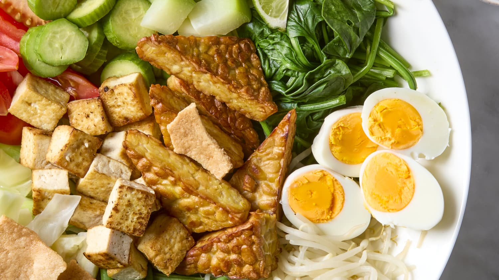
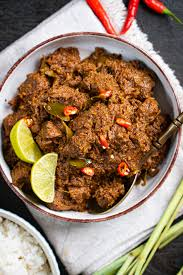

Rasa Nusantara!!
Nasi Goreng (Indonesian Fried Rice)

Ensure the rice is cooked and slightly dry for frying. Gather and chop all ingredients. Heat a wok or skillet with oil. Add the beaten egg, scramble, and set aside. Add more oil to the wok. Sauté garlic, onion, and chili until fragrant. Add your protein and stir-fry until cooked. Add the rice to the wok, followed by the sweet soy sauce and regular soy sauce. Stir until evenly coated. Mix in the scrambled egg. Serve hot, garnished with fried shallots, cucumber slices, or a fried egg on top.
Ingredients:
For the Fried Rice:
Recipe:
Sate Ayam (Chicken Satay)

Mix all marinade ingredients in a bowl. Add chicken cubes and coat thoroughly. Let marinate for at least 1 hour. Thread the marinated chicken cubes onto the soaked bamboo skewers. Grill the skewers over medium heat, turning occasionally, until fully cooked (about 10-12 minutes). Serve with peanut sauce and rice cakes (Lontong).
Ingredients:
For the Satay:
For the Marinade:
Recipe:
Gado-Gado (Indonesian Salad with Peanut Sauce)

Blend all sauce ingredients until smooth, adding water gradually to reach the desired consistency. Arrange the vegetables, boiled egg, tofu, and tempeh on a plate. Pour peanut sauce over the salad and serve with crackers or rice cakes.
Ingredients:
For the Salad:
For the Peanut Sauce:
Recipe:
Rendang (Indonesian Slow-Cooked Beef Curry)

Blend all spice paste ingredients into a smooth mixture. Heat oil in a wok. Add the spice paste and sauté until fragrant. Add beef chunks and stir to coat them with the paste. Pour in coconut milk, tamarind juice, and add lemongrass, kaffir lime leaves, and turmeric leaves. Cook on low heat, stirring occasionally, until the liquid is mostly evaporated, and the beef becomes tender and caramelized. Serve with steamed rice.
Ingredients:
For the Rendang:
For the Spice Paste:
Recipe:
Soto Ayam (Indonesian Chicken Soup)

Blend all spice paste ingredients into a smooth mixture. Heat oil in a pot and sauté the spice paste until fragrant. Add chicken, water, lemongrass, lime leaves, turmeric, salt, and pepper. Bring to a boil. Lower the heat and simmer until the chicken is cooked through and tender. Remove the chicken, shred it, and return to the soup. Boil vermicelli noodles and prepare toppings like eggs, fried shallots, and bean sprouts. Serve hot with the garnishes on top, and squeeze lime juice over if desired.
Ingredients:
For the Soup:
For the Spice Paste:
For Garnish:
Recipe: